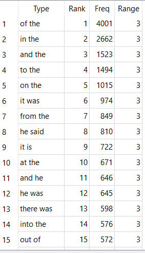
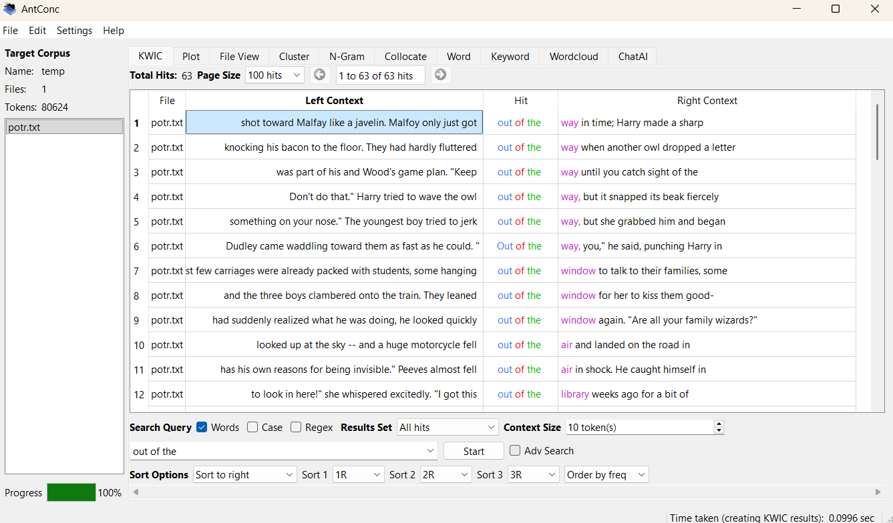
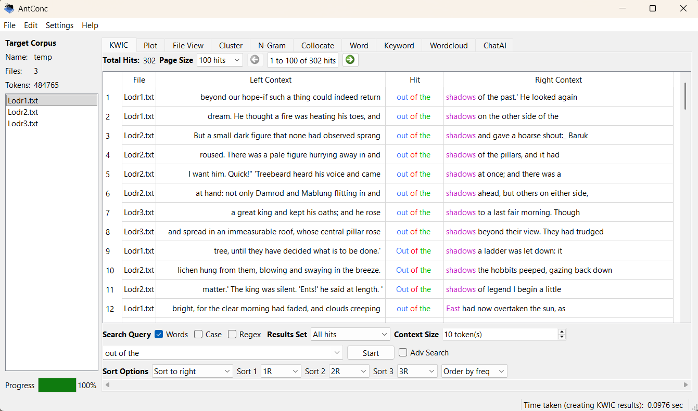
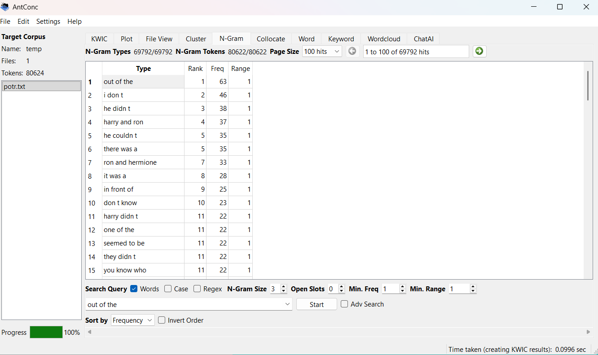
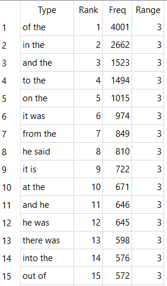

From my official research these two had a lot of words in common which is super suprising that this had around 300-60 word count approximation the list of words I found within my reasearch upon Lord of The Rings was huge compared to Harry Potter's word count it was super huge and Harry Potter's word count was a follow up upon this many different words were one of the same
The use of N-grams they have a huge amount of them combined Example: "out of the"


See how many times from these photo's using the comparison of getting higher
Each time you upgrade the n-grams they tend to get smaller and smaller even from big hits whether it'd be from the Harry Potter books or rather the Lord Of The Ring books
No matter the upgrade the words grouping becomes lower and lower as provided in my resource N-gram researcher Antconc (Ain't this a little treat to look at? -Deadpool;))
Here is N-grams 2 from both prompts


Here is N-grams 3 from both prompts as previously mentioned
Here is N-grams 4

This is 5-grams

Finally here is 6-grams
These comparisons clearly notify you the people reading this information upon the comparison's made within these two prompts however there are stuff used to compare them there is similarity caught from both prompts they use a lot of the information they use from each antconc finding/research has in store is quite similar as everyone can see!
This is my 3D made for Digit 100!